Faith and character
Devotion, scripture and Christian values are woven into the school week, not bolted on at the end of it.
In the tradition of godliness and excellence
A faith-based school in Ibadan taking children from creche through to college, where character is taught with the same seriousness as chemistry.
The shield on our gate is quartered for a reason. Each quarter is a promise we make to every child who walks through it.
Devotion, scripture and Christian values are woven into the school week, not bolted on at the end of it.
The Nigerian national curriculum taught to a standard that prepares pupils for WAEC, NECO and beyond.
Music, drama, choir and public speaking, so every child finds a place where they are confident.
Languages, technology and global awareness that let our pupils hold their own anywhere in the world.
One school, three stages. A child can join us at eighteen months and leave us ready for university, without ever changing schools.
6 months – 5 years
Warm, closely supervised care and early-years learning through play, phonics and songs. Small groups, familiar faces, and daily updates for parents.
More on early yearsPrimary 1 – JSS 3
The Nigerian national curriculum with added strength in literacy, numeracy and ICT. Pupils sit Common Entrance and the BECE with real preparation behind them.
More on basic schoolSSS 1 – SSS 3
Science, arts and commercial streams, with focused WAEC, NECO and JAMB preparation and one-to-one guidance on course and university choices.
More on collegeA child can arrive at eighteen months and leave us ready for university.
Creche · Basic School · College
Before anyone asks about results, they ask whether their child will be safe and settled. So that is what we built first.
Term dates, results, competitions and everything happening on campus.
Places are filling in Nursery and JSS 1. Forms can be completed online or collected at the school office.
Graduands from Nursery 2 to SSS 3 were presented at the end-of-session ceremony in the Main Hall.
Resumption, mid-term break, examination weeks and the end-of-year thanksgiving service.
Book a campus tour on a school day, meet the teachers, and sit in on a lesson. No appointment fee.
A faith-based school with a multi-dimensional approach, raising future leaders in the tradition of godliness and excellence.
Covenant Treasures International School is a Christian school in Ibadan, Oyo State, teaching children from creche through to college on one campus. We were founded on a simple conviction: that a child's character and a child's results are not two separate projects.
Everything here follows from that. Devotion sits in the timetable alongside mathematics. Teachers are hired for what they can draw out of a child, not only for what they know. And parents are treated as partners in the work rather than an audience for it.
To provide a nurturing and stimulating learning environment that inspires academic excellence, builds strong moral values, develops creative and critical thinkers, and equips learners to become godly, responsible and impactful leaders in a dynamic world.
To raise globally minded, confident and compassionate leaders who excel academically, demonstrate strong character, embrace innovation, and create a lasting positive impact in their communities and the world.
The quartered shield rests on an open book. Each quarter names something we are accountable for.
Devotion, scripture and Christian values are woven into the school week, not bolted on at the end of it.
The Nigerian national curriculum taught to a standard that prepares pupils for WAEC, NECO and beyond.
Music, drama, choir and public speaking, so every child finds a place where they are confident.
Languages, technology and global awareness that let our pupils hold their own anywhere in the world.
Excellence, character, leadership — building a lasting legacy in all we do.
From the school anthem
Six commitments the school measures itself against, in and out of the classroom.
Doing ordinary work to an uncommon standard, in the classroom and outside it.
Honesty when it costs something. Character is what holds when nobody is checking.
The habits that turn ability into achievement, taught patiently and expected consistently.
For teachers, for one another, and for every family that walks through our gate.
Responsibility given early, so pupils learn to carry it before they are asked to.
Measuring ourselves by who our pupils become, long after they have left us.
Sung at assembly and at every ceremony, it is the shortest statement of what the school is for.
Covenant Treasures, we proudly stand,
United in wisdom, heart and hand.
With truth and excellence, we lead the way,
Building our future every day.
Covenant Treasures, our school, our pride,
With courage and faith, we rise worldwide.
Excellence, Character, Leadership too,
Building a lasting legacy in all we do!
The people responsible for the school day to day.
Carries overall responsibility for the school — its direction, its standards, and the tone set from the top. Questions that need a decision rather than an answer come to her.
Runs the school day and owns what happens in the classroom: the curriculum across all three stages, examination preparation, and the teaching staff. The person to speak to about how your child is getting on.
First point of contact for the school. Handles admissions enquiries, application forms, records and fee schedules, and will point you to the right person for anything else.
Book a campus tour on a school day, meet the teachers, and sit in on a lesson. No appointment fee.
The Nigerian national curriculum, taught in three stages from creche to college, with the depth to carry a child all the way through.
6 months to 5 years
The early years are about safety, warmth and curiosity, in that order. Children learn through play, songs, stories and structured phonics, in small groups with familiar adults.
Primary 1 to JSS 3
The Nigerian national curriculum, taught with extra weight on reading, mathematics and ICT because those three decide how far a child can go later. Pupils are prepared properly for Common Entrance and the BECE.
English, Mathematics, Basic Science and Technology, National Values, Civic Education and Social Studies.
Computer studies, French, Yoruba, agricultural science, home economics, music and physical education.
Weekly scripture, assembly devotion and a character focus that runs through every subject.
SSS 1 to SSS 3
Three streams, and honest guidance about which one fits a particular student. From SSS 2 the timetable turns toward examinations, with structured WAEC, NECO and JAMB preparation rather than last-minute cramming.
Physics, Chemistry, Biology, Further Mathematics and Agricultural Science, with practical laboratory work.
Literature, Government, Christian Religious Studies, History and languages.
Economics, Financial Accounting, Commerce and Business Studies.
Continuous assessment through the term, a mid-term test, and an end-of-term examination. Reports go home with a written comment from the class teacher, not only a set of scores, and every parent is invited to a termly meeting to go through it.
Book a campus tour on a school day, meet the teachers, and sit in on a lesson. No appointment fee.
Open all year for creche and nursery, and at the start of each term for basic school and college.
Five steps, and we will walk you through every one of them. Most families finish the process in under two weeks.
Send the enquiry form below, call the office, or message us on WhatsApp. Tell us your child's age and the class you have in mind.
Come on a normal school day. See the classrooms in use, meet the teachers, and ask whatever you need to ask. There is no charge for a tour.
Collect a form at the office or start online. You will need your child's birth certificate, recent passport photographs and the last report card from their current school.
A short placement assessment for basic school and college entrants, so we put your child in the right class. Nursery entrants have an informal chat instead.
We confirm the offer, share the fee schedule and uniform list, and give you the resumption date and everything your child needs on the first day.
Fees vary by stage and are reviewed each session. We would rather discuss them with you directly than publish a figure that goes out of date. Call the office or request the current schedule below.
Fill this in and we will come back to you with the fee schedule, available places and a date for a visit.
Usually yes, if there is a place in the class. We will assess where your child is and put support in place so they are not left behind by the transfer.
Ask the office about the current routes and pickup points. Availability depends on where you live relative to Akala Express Way.
Speak to the office about the current meal arrangement and any dietary needs your child has.
Yes. We are openly a Christian school and devotion is part of our day, and families of every background are welcome as long as they are comfortable with that.
Confirm current hours with the office, including the after-school arrangement for parents who finish work later.
What a day here actually looks like, and the things we put in place so parents do not have to worry.
Your child's safety is not a feature of the school. It is the condition for everything else in it.
The premises are under continuous camera surveillance, covering classrooms, corridors and the play areas.
Visitors are signed in, and children are released only to a named parent or an authorised guardian.
A backup supply keeps lessons, fans and lighting running through outages, so learning is not interrupted.
Every member of teaching staff is qualified, vetted and supported with ongoing training.
Spacious, well-ventilated rooms with the materials each stage needs, kept to a manageable class size.
Trained staff and a stocked sick bay, with parents contacted immediately if a child is unwell.
Children remember the choir, the match and the debate long after they have forgotten a test.
Voice training, instruments and performances at school services and events.
Public speaking and stagecraft, with inter-house and inter-school competitions.
Football, athletics and inter-house sports, culminating in the annual sports day.
Typing, basic coding and digital literacy for pupils from upper primary onward.
Writing, reading challenges and the school newsletter.
Termly educational trips that connect what is taught in class to the world outside it.
Book a campus tour on a school day, meet the teachers, and sit in on a lesson. No appointment fee.
Term dates, results, ceremonies and what is happening on campus this session.
The school marked the close of the session with its Valedictory Service and End of Session Graduation Ceremony in the CTIS Main Hall, under the theme Building a Lasting Legacy.
Graduands from Nursery 2, Basic 5, JSS 3 and SSS 3 were presented, celebrating not only examination results but the character built over the years that led to them. Parents, staff and guests joined the ceremony, which closed with the school anthem.
Doctors, pilots, lawyers, chefs and engineers filled the steps as Basic Two dressed as what they hope to become.
The full cohort presented at this year’s ceremony, from Nursery 2 through to SSS 3.
Excellence, integrity, discipline, respect, leadership and legacy — the six values the school holds itself to.
Places are filling in Nursery and JSS 1. Apply online or collect a form at the school office.
Resumption day, classrooms, staff and the ordinary days in between.
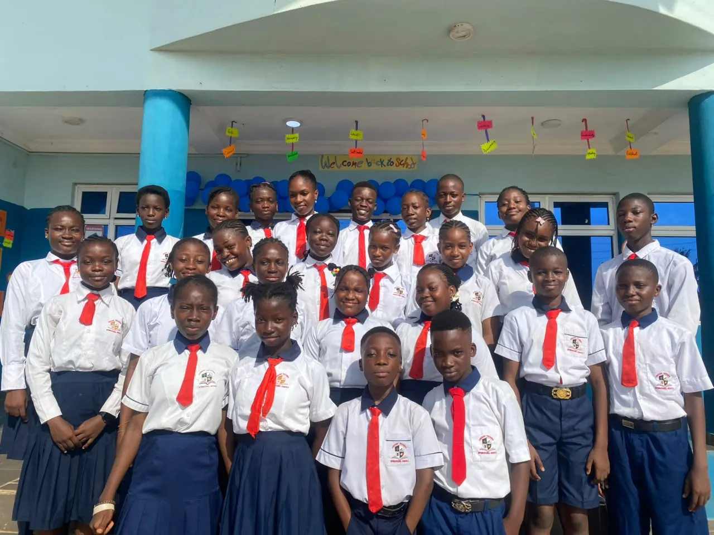
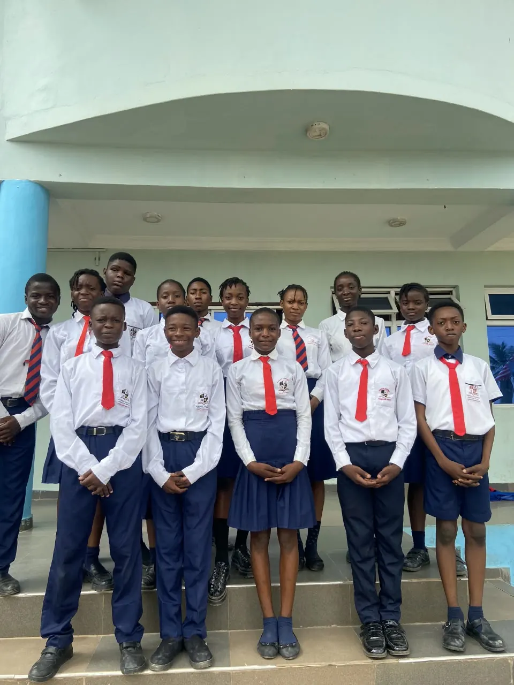
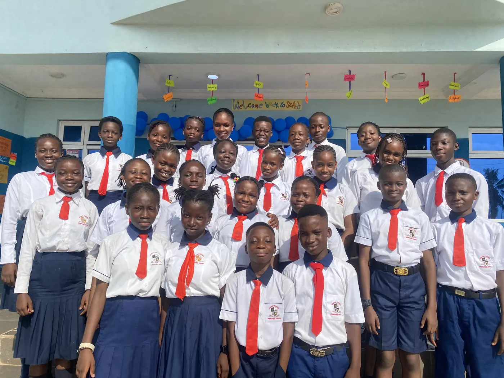
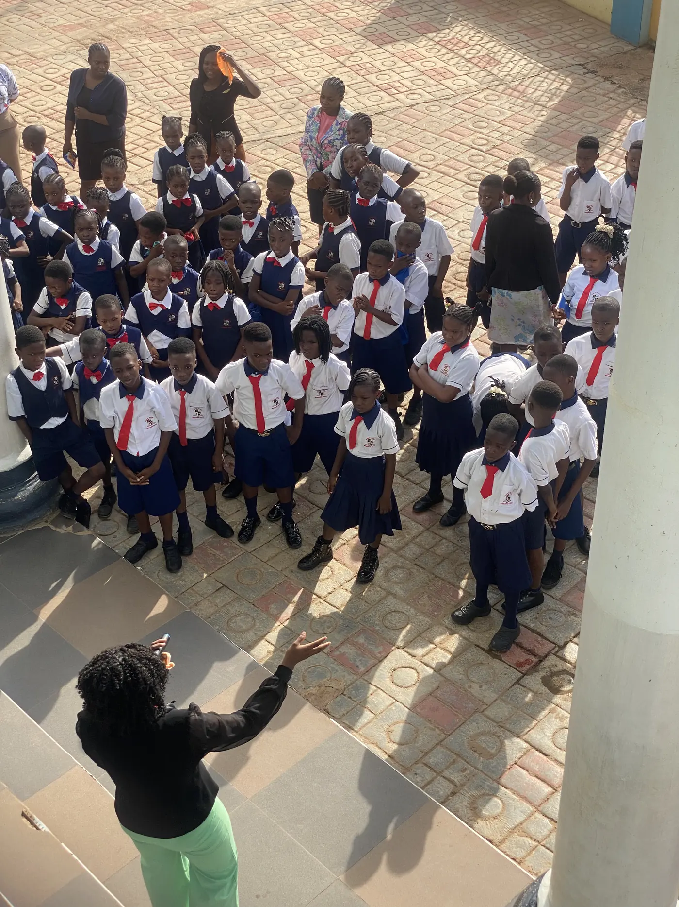
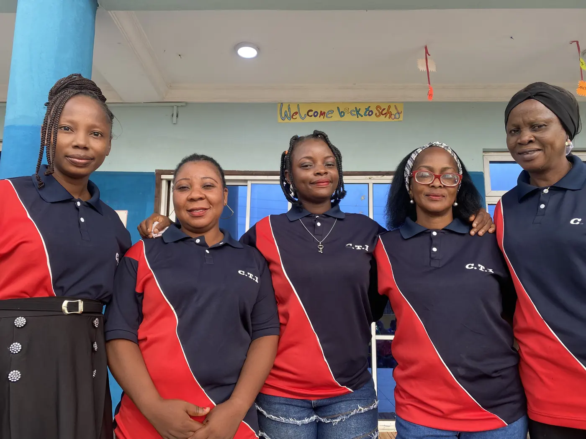
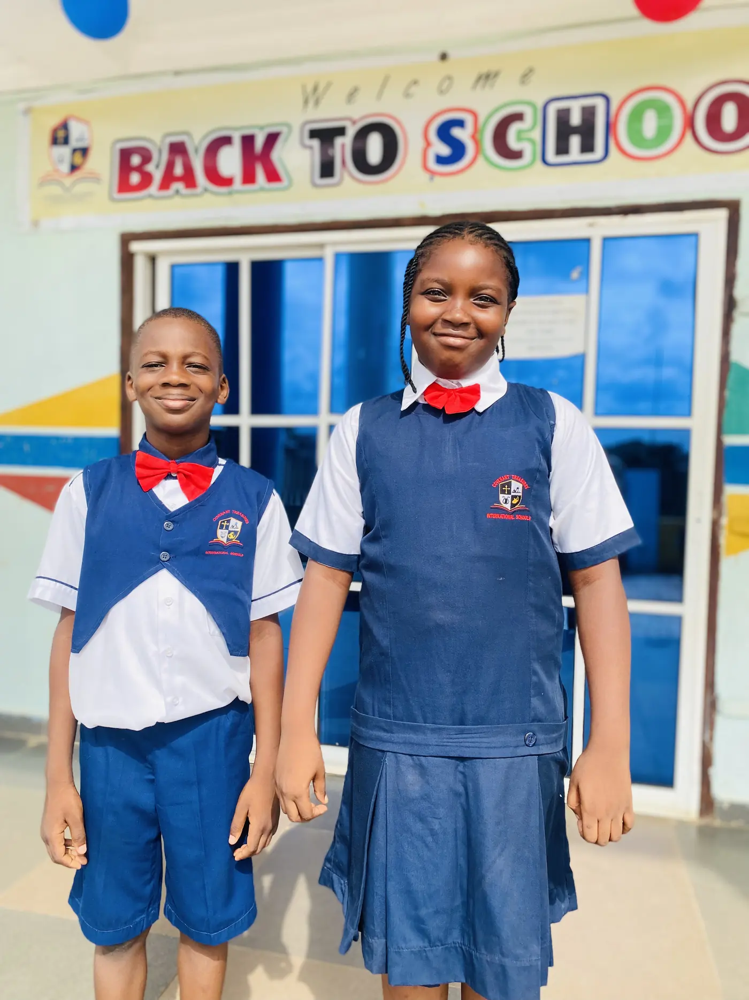
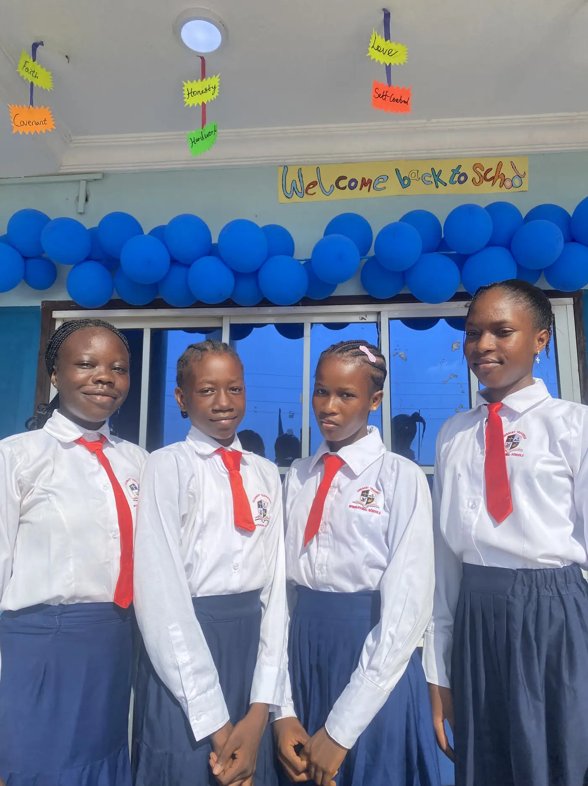
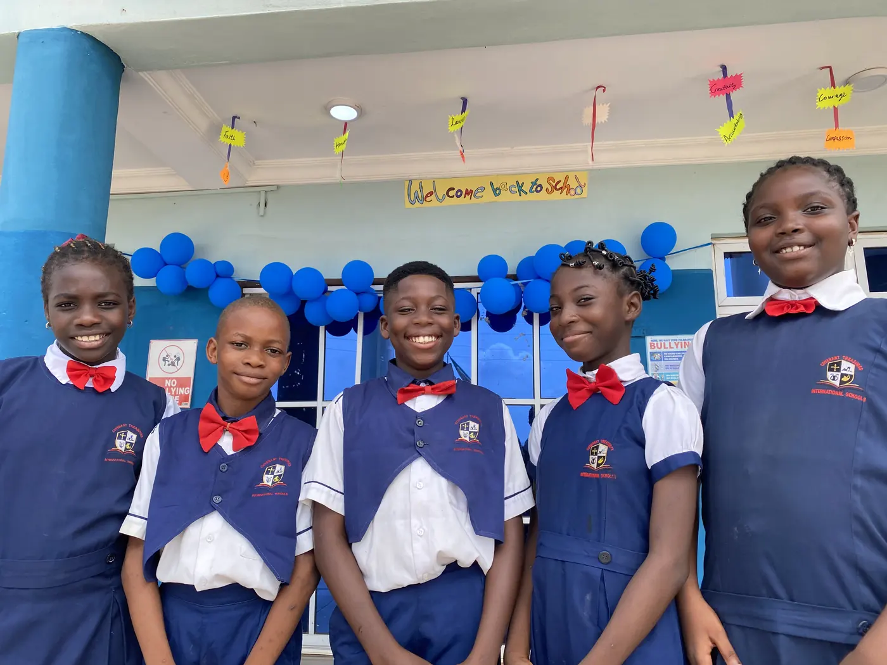
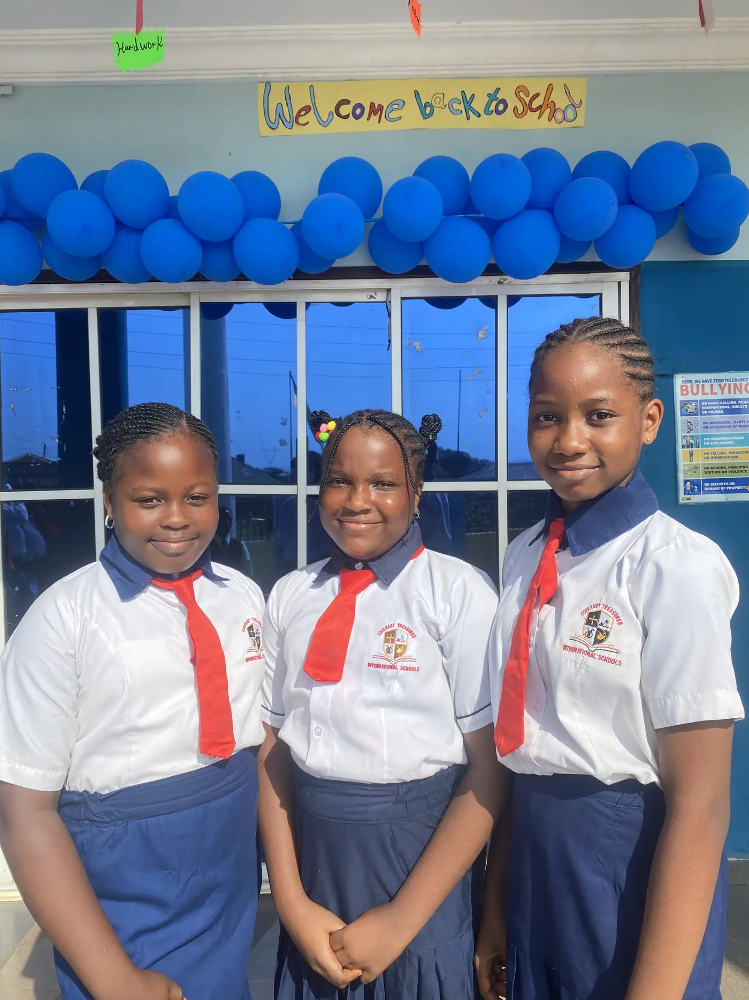
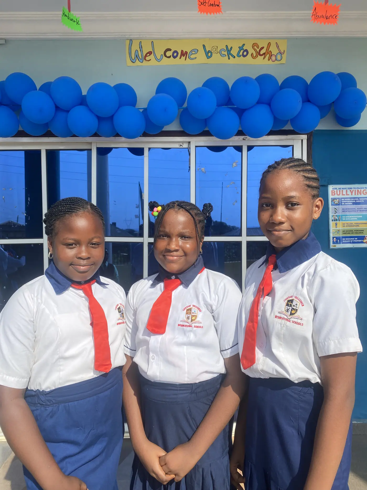
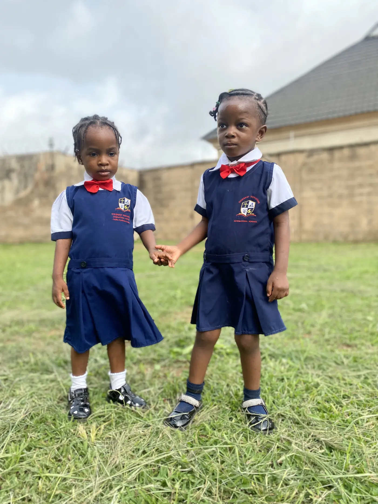
Call, message or visit. The office is open through the school day.
Map embed goes here.
Zone 3, Lane 2, Olose (Unity Estate),
Off Akala Express Way, Kuola, Ibadan.
For admissions enquiries, please use the application form instead so we have your child's details from the start.